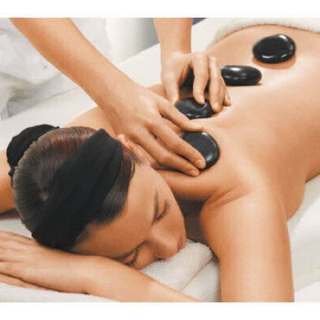

A massagem sueca segue movimentos similares, além de ser uma das mais populares de todos os tempos.
Essa técnica é valiosa para quem possui muitos nós musculares, promovendo um relaxamento intenso.
Massagem Sueca
O principal benefício fisiológico da massagem sueca é a expulsão do ácido lático das fibras musculares. Muito útil para atletas e pessoas com dores musculares decorrentes de tensão.
Seu estilo ficou conhecido em toda a Europa e estudantes de vários países aprenderam sua técnica e a disseminaram no Ocidente.
No Brasil, a massagem sueca também ficou conhecida como "massagem clássica".
Seu roteiro é composto de movimentos longos e circulares na direção do coração, junto de vibrações e
batidas ao longo dos músculos, aliada à técnica de movimento articular passivo, que previne contraturas
musculares.
9.8
Tipos
ESPORTIVA
A massagem esportiva é uma boa opção para quem possui lesão causada por movimento repetitivo,
como pode acontecer quando há prática de algum esporte.
9.8
LOMBAR
Aumenta a circulação sanguínea aliviando o stress e alívio de dores no local.
9.6
PESCOÇO
Torna a musculatura mais flexível, ampliando os movimentos,
eliminando as dores e desconfortos provenientes de estados de tensão.
8.9
PEDRAS QUENTES
A massagem com pedras quentes é indicada para pessoas que têm dores musculares e tensão,
ou que simplesmente querem relaxar.
9.9

PONTO-GATILHO
A massagem de ponto-gatilho é mais adequada para pessoas que têm lesões,
dores crônicas ou condições específicas
9.2
SHANTALA
Shantala é uma técnica de massagem de origem indiana desenvolvida para ser aplicada em bebês.
ela proporciona alívio das cólicas, promove bem-estar e fortalece o vínculo
afetivo de mãe e pai com o bebê.
10
SHIATSU
A massagem shiatsu é um tipo de massagem japonesa indicada para pessoas que querem se sentir
relaxadas e aliviar o estresse, a dor e a tensão. Ela promove o relaxamento físico e emocional
9.5
Planos
$25 Mensal
Plano padrão. Não paga o acréscimo de 45 minutos em todas as massagens que fizer no mês
$50 Mensal
Plano premium. Não paga o acréscimo de 60 minutos em todas as massagens que fizer no mês
$70 Mensal
Plano star.Tem desconto de 40% em todas as massagens além de n pagar por acréscimos e concorre a brindes semanalmente
$100 Mensal
Plano plano.Tem desconto de 60% em todas as massagens além de n pagar por acréscimos e concorre com mais chances a brindes semanalmente.
( Recomendado para aqueles que estão realizando tratamentos de lesões)